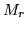

Linear Transformation Estimation Formulae
For reference purposes, this section lists the various formulae
employed within the HTK adaptation tool . It is assumed throughout
that single stream data is used and that diagonal covariances are also
used. All are standard and can be found in various literature.
The following notation is used in this section
the model set
the adapted model set
 number of observations
number of observations
 a mixture component
a mixture component
 a sequence of
a sequence of  -dimensional observations
-dimensional observations
the observation at time  ,
,
extended observation at time ,
mean vector for the mixture component
extended mean vector for the mixture component
covariance matrix for the mixture component
the occupancy probability for the mixture component
at time
To enable robust transformations to be trained, the transform matrices
are tied across a number of Gaussians. The set of Gaussians which
share a transform is referred to as a regression class. For a
particular transform case
, the  Gaussian components
will be tied together, as
determined by the regression class tree (see
section 9.1.4). The standard auxiliary
function shown below is used to estimate the transforms.
where subsumes all constants and
, the occupation likelihood, is defined as,
and
indicates the Gaussian component at time ,
and
is the
adaptation data. The occupation likelihood is obtained from the
forward-backward process described in section 8.8.
Subsections
Back to HTK site
See front page for HTK Authors